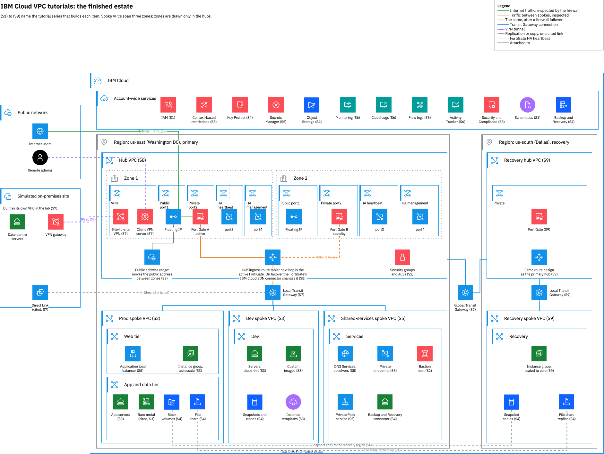

Final scenario: design Northgate's estate
By the end of this unit you'll have made the main decisions for a whole estate, from the hub to the recovery region, and compared each one with the worked answer.
Northgate Freight is a made-up haulier. Its needs are made up, but the answers come from real tests: each one was tested in a lab or comes from IBM's pages.
The worked answers come from lab runs and IBM's pages, with the conditions they give. Where a run measured something once, the unit says so. The review question repeats one from unit 6.3.
The hub and spokes
The lab builds this finished estate: a hub with a firewall pair, three spoke VPCs joined by a Transit Gateway, a simulated site, and a recovery region.

How do you choose the address ranges of the hub, the spokes, the site and the recovery region?
Show the worked answer
Give each VPC its own range, and keep the recovery region on the same pattern. The estate uses 10.10 for the hub, 10.20 for prod, 10.30 for dev, 10.40 for shared services, 192.168.0.0/16 for the site, and 10.110 and 10.120 for the recovery hub and spoke. Overlapping prefixes are among what can go wrong, and the recovery hub follows the primary's pattern.
Which VPCs sit on which Transit Gateway?
Show the worked answer
Hub, prod, dev and shared on a local gateway, and the hub also on a global gateway with the recovery hub. A VPC joins many local gateways and one global gateway. The lab tried a second global attach and it was rejected. The hub is on the global gateway and the other three stay on the local one. The recovery region has its own local gateway.
How do you build the estate from code?
Show the worked answer
The Terraform module, run on your own machine. The module installs and configures the firewalls with a zsh script that calls the CLI. A Schematics job has no zsh, so the module runs with local Terraform. Building by hand takes hours. In the lab the module made 137 resources, and the estate check reported all 58 items present.
Ways in and the firewalls
Northgate wants internet traffic and spoke traffic to pass through the FortiGate pair.
Inbound web traffic must be inspected by the firewall. How does it get in?
Show the worked answer
A public address range, an internet ingress route table, and a route to the firewall. A public gateway is outbound only. A public address range can't be assigned to a resource. It's the destination of a route in an ingress table, with the firewall as next hop. A request to the range's address returned 200 and the firewall logged it. Plan for a public address to be scanned: the log showed requests from other addresses a few minutes after the range existed.
The app subnet's outbound traffic must go through the firewall. Where does the 0.0.0.0/0 route go?
Show the worked answer
In a table for that one subnet, with two delegate routes. In the default table, the bastion's floating IP stopped answering at once, because every subnet uses that table. In the subnet's own table, delegate 10.20.0.0/16 so replies to the bastion's subnet stay local, and delegate 161.26.0.0/16 so the platform resolvers still work. The lab didn't find out which wins, a custom default route or a public gateway.
After a firewall failover, what keeps the spoke routes pointing at the active firewall?
Show the worked answer
A loop you run. The connector moved the hub routes 10 to 13 seconds after the command and left the spoke routes alone. With the loop running every five seconds, traffic came back about 20 seconds after the failover command. The loop needs an API key or trusted profile that can update routes in both spokes. If it stops, the pair still fails over, but the spoke traffic doesn't follow.
The connection to the site
Northgate's data centre has one prefix that matters, 192.168.0.0/24. In the lab a second VPC stands in for it.
The site connects over the internet, with one prefix. What do you build?
Show the worked answer
A route-mode site-to-site VPN, static, with a route on each side. Static suits a few prefixes. Dynamic needs a Transit Gateway. A route-mode gateway needs a route whose next hop is the connection, and each side needs its own, because one route gives a one-way path. For a private link instead, IBM's pages say Direct Link Dedicated or Connect, joined to a Transit Gateway. That part comes from IBM's pages only, because the lab didn't build Direct Link.
How does the Transit Gateway learn 192.168.0.0/24, so shared services can reach the site's DNS server?
Show the worked answer
A separate Transit Gateway ingress table that advertises to the gateway, holding the route. A route flagged to advertise, in a table whose advertise_routes_to is empty, goes nowhere and gives no error. The default table can't be the ingress table while any subnet uses it. About 40 seconds after we made the separate table's route, the report listed 192.168.0.0/24.
The report lists the prefix and the queries reach the site's DNS server, but the answers time out. Why?
Show the worked answer
The site has a route back for prod only, and shared services need one too. A route was added in the site for 10.20.0.0/16 only. Adding a second route for 10.40.0.0/16 makes names resolve. Security groups and network ACLs also need rules in both directions.
Backup and the recovery region
Northgate's goal is that prod can run in another region if us-east is lost. Read the cost before you choose.
Which copies of prod's data must exist in us-south, the recovery region, before a loss?
Show the worked answer
A snapshot copied to the recovery region, a file share with a replica there, and the web image exported to a bucket. Only one snapshot copy can exist in each region. A us-east bucket serves a us-south image. A gateway is a regional resource, so its configuration isn't copied to other regions. IBM says backups and snapshots aren't a disaster recovery solution, because restoring from either is a manual operation that takes time.
Northgate wants recovery traffic inspected like production traffic. What should the recovery region be?
Show the worked answer
A copy of the primary, built from code, with its own firewall pair. The copy gives recovery that matches production. Cost: two firewall pairs are about $1.36 an hour for the licences, so delete the recovery pair when you pause. A reduced copy leaves recovery traffic uninspected, and building nothing until a disaster costs least but gives the slowest recovery.
The global gateway joins the two hubs. What must each hub do for the spokes to reach each other?
Show the worked answer
Advertise its spoke's range from its Transit Gateway ingress table. Before advertising, the global gateway carried only the hubs' own ranges as /18 prefixes. After it, the report added 10.20.0.0/16 and 10.120.0.0/16. The path then ran through the primary firewall, the global gateway and the recovery firewall, and a ping from prod to the recovery spoke lost no packets.
Recover, move users, fail back
Prod is lost in us-east, and later it returns. Northgate recovers it, moves its users and then fails back.
Which recovery step took longest in the lab?
Show the worked answer
Creating the image in us-south from the exported file. In the lab: the volume 52 seconds, the image 7 minutes 4 seconds, two web servers 18 seconds, the share replica 22 seconds, the promotion 38 seconds, and mounting the share 1 minute 42 seconds. The image can start only once the exported file exists.
Northgate changes app.vpct.internal to the recovery balancer, with a TTL of 60. When do clients reach it, and who still can't?
Show the worked answer
Within 37 seconds in the lab, but not the web tier until its network ACL allows the recovery range. Both test clients had the old address 18 seconds after the change and the new one within 37. The prod web server resolved the name, and its request to the recovery balancer timed out: its subnet's ACL allowed outbound traffic only to 10.20.0.0/16.
Prod must return to us-east. In what order do you do it?
Show the worked answer
Stop the writers, copy the data back, fail the share back, point the name back, then remove the recovery servers. Cut back only after the data is back. Deleting a server removes the volumes attached to it, so copy first. Fail over the original share, which is already a replica: a new replica of the recovery share is refused. A writer that kept writing through the failback had its last write acknowledged as number 861, and the us-east share held only lines 1 to 409.
Review Northgate's draft plan
A colleague at Northgate wrote a draft plan. Does each line hold up against the lab results?
Draft: "Send the app subnet's outbound traffic through the firewall with a 0.0.0.0/0 route in the default table."
Show the answer
It doesn't hold. Every subnet of the VPC uses the default table. The bastion's floating IP stopped answering at once. Use a table for the one subnet.
Draft: "For failback, create a new replica of the recovery share in us-east."
Show the answer
Error code: shares_replica_cannot_be_created Error message: Unable to create share replica for the source share ... The source share either already has a replica or the source_share field contains replica share id
It doesn't hold. After the failover the original share is already a replica of the recovery share. Fail that one over, with --fallback-policy fail.
Draft: "A prefix filter on the dev connection keeps dev away from prod only."
Show the answer
It doesn't hold. A filter on one connection hides that connection's prefixes from every other connection. For dev alone, use a network ACL rule on the source range or a security group rule.
Draft: "After the cutover, every client in us-east reaches the recovery balancer."
Show the answer
It doesn't hold. The prod web server resolved the name and timed out against 10.120.1.7:8080. Its subnet's ACL allowed outbound traffic only to 10.20.0.0/16. A client in the web tier needs the same rule as the app tier before the cutover helps it.
Four questions
Are snapshots and backups a disaster recovery solution?
Show the answer
No. A cross-regional snapshot copy or a cross-region file share replica gives you the data outside the region. Recovery is still a set of steps you run.
How many copies of one snapshot can exist in a region?
Show the answer
One. Only one copy can exist in each region.
Can a public address range be assigned to a server?
Show the answer
No. IBM says public address ranges can't be assigned directly to resources. The next hop is a firewall or a similar server.
Review question from Unit 6.3. Northgate picks the cheapest FortiGate licence plan now and wants web filtering next year. What is true?
Show the answer
IBM says the plan can't be changed after deployment. The ATP plan has no web or content filtering. UTP is listed at more than twice the ATP price per vCPU. The server's size can change, but not the plan.
You have designed a whole estate
Give each VPC its own range. Put the hub and spokes on a local gateway and the two hubs on a global one. Run the firewall pair, and keep the spoke routes in step with the active firewall. Advertise routes from a separate ingress table. Copy data out of the region before a loss, and cut back only after the data is back.
Tutorial chapter 90, Building the full estate from the series 9 checkpoint, builds the estate from code. Chapters 91 to 94 build the recovery region, recover prod, move users and fail back.